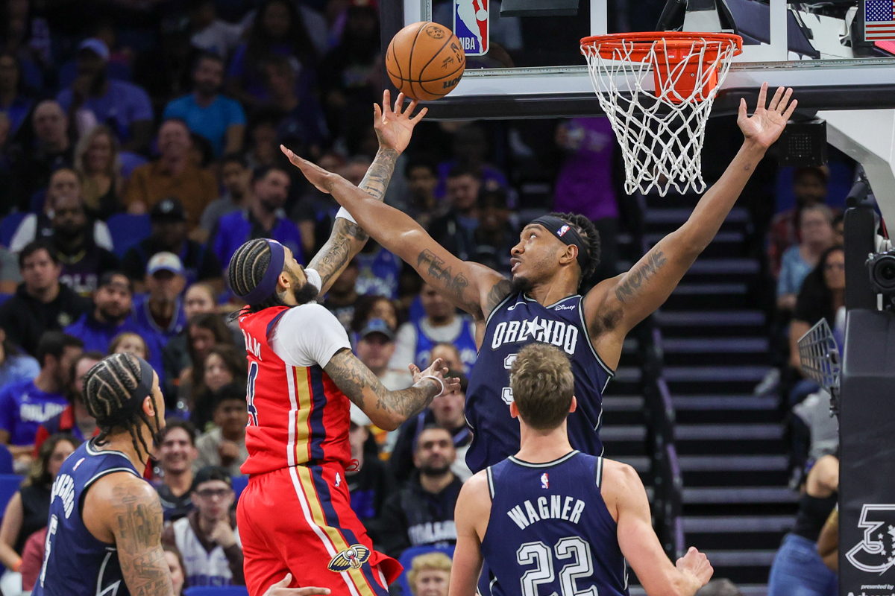
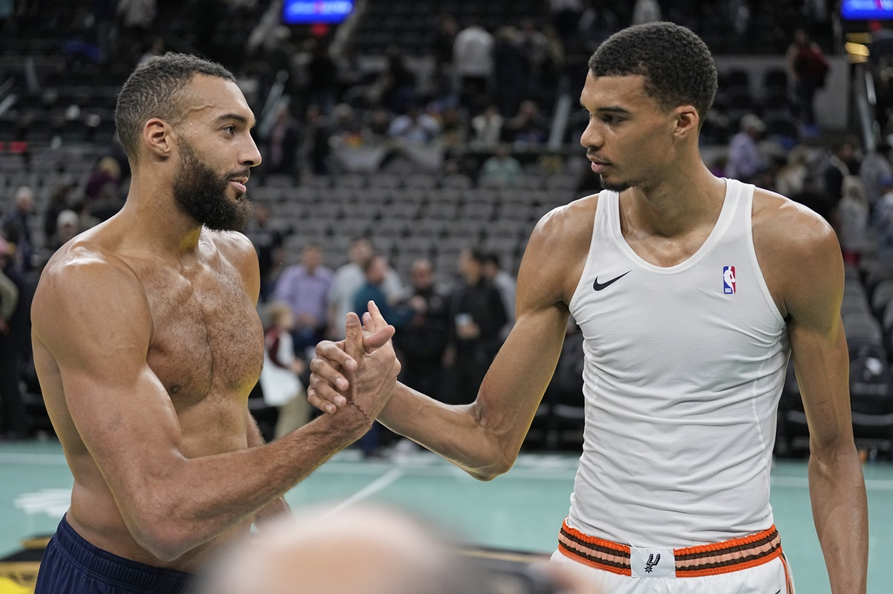
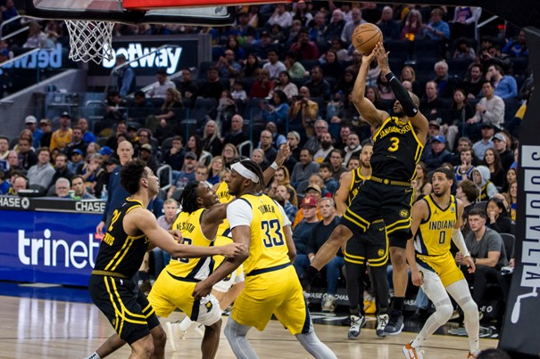
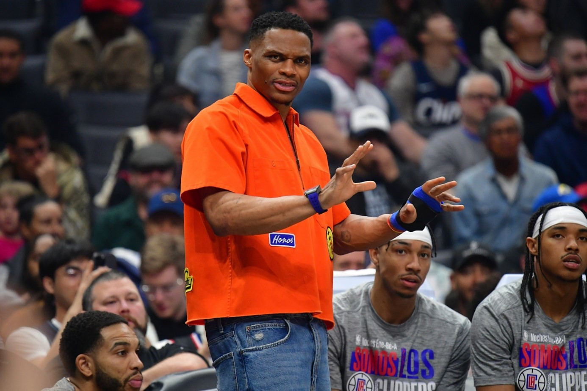
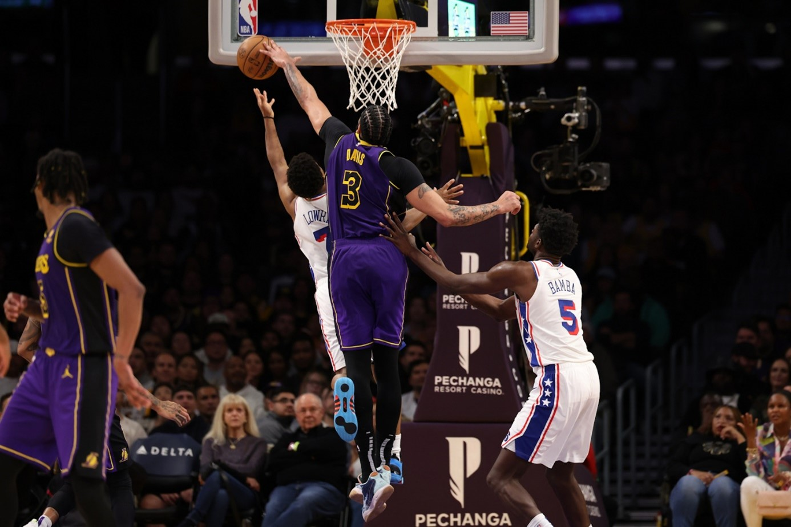
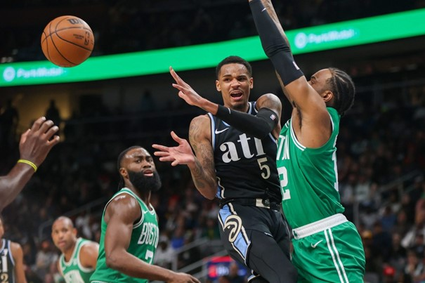
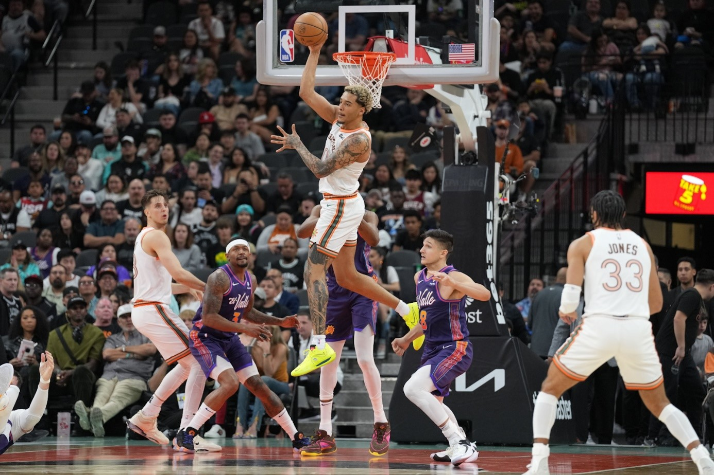
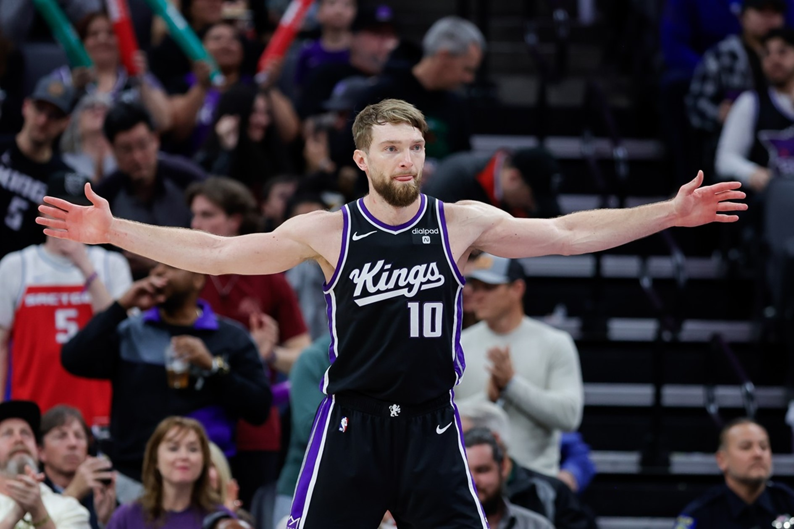
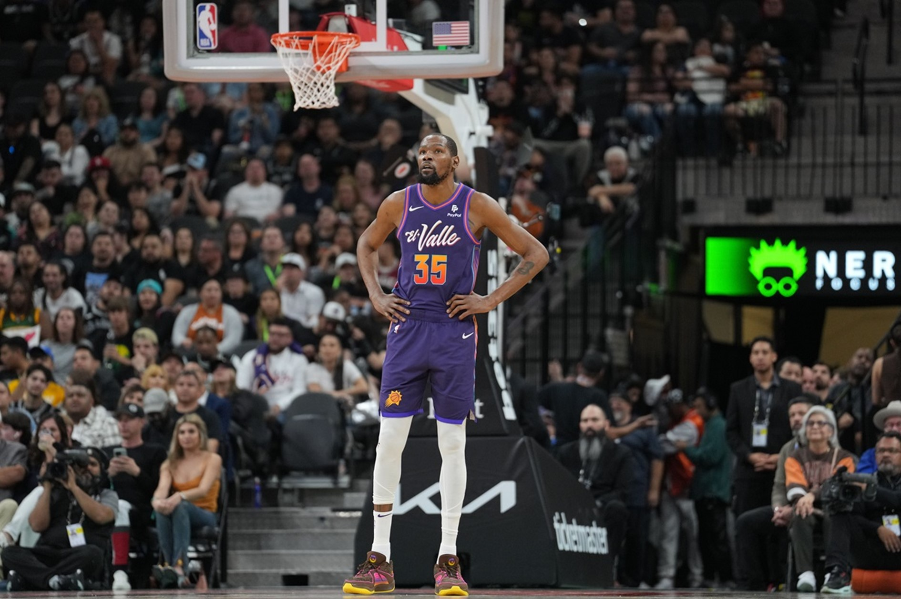

News
Touché au genou, Brandon Ingram sera absent au moins deux semaines

Update : l’IRM passée par Brandon Ingram a révélé une contusion osseuse au genou gauche.
Un diagnostic qui a de quoi soulager les Pelicans, car ça aurait pu être bien pire pour le All-Star,
même si l’ailier des Pelicans sera absent au moins deux semaines
Brandon Ingram est resté un long moment au sol,
se tordant de douleur après un mauvais appui qui a abouti à une torsion de son genou gauche,
dans le troisième quart-temps du match des Pelicans perdu à Orlando.
Le joueur s’est rapidement tenu l’intérieur du genou et a dû être accompagné pour sortir du terrain.
Voilà qui n’augure rien de bon pour New Orleans, qui va désormais attendre les résultats des examens avec appréhension.
« C’est extrêmement dur de le voir tomber ainsi. Nos prières lui seront adressées ce soir, en espérant une bonne nouvelle »,
s’est ainsi contenté de déclarer son coach Willie Green, dans l’attente d’en savoir plus.
Même chose pour Trey Murphy III qui pourrait prendre la relève, le temps de la convalescence de Brandon Ingram et qui
n’a pas chômé cette nuit, compilant 21 points en 29 minutes.
« Ça fait mal. On espère que ce ne sera rien de grave. Il a été d’une grande aide pour moi, dans ma carrière et ma progression, tout le processus qui m’a amené à maturité. De le voir s’écrouler comme ça, ça fait mal. On prie juste pour lui ».
Les Pelicans ont en effet beaucoup à perdre alors que le sprint final ne fait que commencer et que les prétendants (Phoenix, Sacramento…) pour les sortir du Top 6 à l’Ouest sont nombreux.
Pour Victor Wembanyama, la médaille d’or « est très atteignable » aux Jeux olympiques de Paris
Jeux olympiques – Le Français des Spurs ne se cache pas et annonce que remporter les Jeux à Paris est possible.

Et même « très atteignable » selon lui…On sait désormais que la France affrontera l’Allemagne, le Japon et le vainqueur du TQO en Lettonie dans la phase de poules des Jeux olympiques de Paris, cet été.
Après Vincent Collet, plutôt satisfait d’avoir évité la Serbie de Nikola Jokic, c’est Victor Wembanyama qui a été ainsi interrogé sur ce tirage au sort. « On a un groupe potentiellement piège, même s’il semble intéressant et abordable pour nous »,
réagit le Français des Spurs pour nos confrères de L’Équipe. N’est-il pas déçu de ne pas croiser les États-Unis,
comme les Bleus l’avaient fait en 2021 au Japon ? « Jouer une équipe en poules ou en demi-finales revient au même »,
répond le premier choix de la Draft 2023. « Le fait qu’ils viennent au complet est ce qu’il y a de mieux pour moi.
Je préfère jouer la meilleure sélection de chaque pays, plutôt qu’affronter seulement deux ou trois d’entre eux.»
Sauf que si Team USA vient avec l’équipe annoncée, les chances de remporter la compétition vont être minces pour la concurrence.
Pas pour Victor Wembanyama, qui estime que ne pas décrocher l’or serait une grosse déception.
« Je verrai ça comme un échec si je pense qu’on aurait pu mieux faire. Et en même temps, je pense que la médaille d’or est très atteignable si on joue de manière à ne pas avoir de regrets », annonce-t-il.
Chris Paul expulsé pour avoir traité l’arbitre Tony Brothers de TikToker
NBA - en début de saison, Chris Paul règle désormais ses comptes avec l’arbitre Tony Brothers, qu’il a traité de « TikToker »…

Au long de sa carrière, Chris Paul a été en « guerre » avec une partie des arbitres NBA. Et ça ne s’arrange pas.
Après avoir accusé, plus tôt dans la saison, Scott Foster de l’arbitrer de façon « personnelle », et d’avoir un problème avec son fils, le meneur des Warriors s’est cette fois pris la tête avec Tony Brothers.
Alors que les Pacers filent ainsi vers la victoire au Chase Center, le vétéran va prendre deux fautes techniques dans les dernières secondes de la partie, à chaque fois de la part de Tony Brothers.
En conférence de presse, Chris Paul a expliqué qu’il avait récupéré la première faute technique simplement parce qu’il avait traité l’arbitre de « TikToker », puis la deuxième parce qu’il lui avait dit qu’il avait trop de pouvoir.
Que voulait-il exprimer en utilisant le terme de « TikToker » ? Interrogé sur le sujet, le meneur se contente de sourire…
Dans la foulée, il a néanmoins publié sur Instagram un extrait d’une ancienne interview de Tony Brothers dans lequel ce dernier explique qu’il aurait aimé être juge, et qu’il n’est pas tellement intéressé par le basket.
« Mais maintenant, je suis le juge, le jury, le procureur, l’avocat de la défense, tout le monde » dit-il.
On doute que la NBA apprécie, même s’il faut voir comment elle considère l’utilisation du terme de « TikToker »…
Russell Westbrook déjà de retour ?
NBA – Opéré d’une fracture de la main gauche le 4 mars dernier, Russell Westbrook serait déjà prêt à rejoindre ses coéquipiers.

Bonne nouvelle pour les Clippers qui pourraient bien récupérer Russell Westbrook plus vite que prévu. Alors que son retour après son opération d’une fracture de la main gauche était prévu pour début avril, le meneur californien serait déjà sur le point de rejoindre ses coéquipiers.
D’après Adrian Wojnarowski, Russell Westbrook devrait en effet bel et bien être en mesure de tenir sa place dans le courant de la semaine prochaine. Sa participation à la rencontre face aux Pacers dès ce lundi n’est d’ailleurs pas totalement exclue, ce qui ferait alors trois semaines pile après son opération.
La formation de Tyronn Lue tourne au ralenti en son absence avec seulement six victoires sur ses onze derniers matchs dont la dernière en déplacement la nuit dernière à Portland. Son retour apportera assurément un coup de boost aux Clippers, en plus de lui offrir trois bonnes semaines pour se remettre en jambes en vue des playoffs.
En son absence, Bones Hyland n’a pas vraiment saisi sa chance, puisque son temps de jeu a de nouveau été limité, avec seulement sept puis quatre minutes jouées lors de la double confrontation face aux Blazers.
Les Lakers mettent fin à quatre ans de défaites face aux Sixers !
NBA – Après quatre ans sans battre les Sixers, les Lakers s’imposent 101-94 à domicile grâce au réveil d’Anthony Davis et LeBron James dans le 4e quart-temps.

Sept. Comme le nombre de défaites de suite des Lakers face aux Sixers ! Une série qui a pris fin cette nuit puisque les coéquipiers de LeBron James s’imposent 101-94 à domicile face aux hommes de Nick Nurse.
Un succès compliqué puisque les Sixers menaient encore au score à l’entame du 4e quart-temps. Rien de génial chez les partenaires de Nicolas Batum (0 point en 20 minutes) mais les Lakers ont joué petit bras pendant 40 bonnes minutes avec un festival de balles perdues et une grosse désorganisation en attaque comme en défense.
Résultat : Tyrese Maxey fait la différence face à D’Angelo Russell, et Mo Bamba se rappelle au bon souvenir de la Crypto.com Arena avec un un 3-points (66-59) puis un dunk à deux mains après un superbe service de Kelly Oubre Jr. Et puis Anthony Davis (23 points, 19 rebonds) va enfiler son costume de « superman », et on ne va plus voir que lui.
À cheval sur les quart-temps, les Lakers signent un 6-0 pour prendre les commandes (79-76), et plus jamais ils ne seront menés au score ! LeBron James s’en va défier Mo Bamba pour marquer avec la faute, et cette agressivité est contagieuse.
Austin Reaves et Davis font sauter le verrou des Sixers, et les exploits de Tyrese Maxey ne suffisent plus. Les Lakers signent un nouveau 6-0 au début du « money time » pour prendre neuf points d’avance (96-87). Le nouveau panier primé de Mo Bamba ne suffit pas, et les Lakers s’imposent finalement 101-94 pour afficher le même bilan que les Sixers : 38 victoires pour 32 défaites.
CE QU’IL FAUT RETENIR
– Philly, la bête noire des Lakers. La dernière fois que les Lakers avaient battu les Sixers, un virus venu de Chine commençait à faire parler de lui. C’était le 3 mars 2020, une semaine avant que la NBA ne stoppe son activité après un cas de joueur contaminé. Depuis, les Lakers s’étaient inclinés sept fois de suite face aux partenaires de Joel Embiid. Justement, cette nuit, il n’était pas là, et ils en ont bien profité en gagnant la bataille du rebond (54 prises à 42) et en inscrivant 38 paniers dans la peinture.
– Record de franchise pour D’Angelo Russell. Comme Evan Fournier aux Knicks, qui avaient effacé des tablettes un vieux record de John Starks, D’Angelo Russell entre dans l’histoire des Lakers en décrochant le record de paniers à 3-points sur une saison. L’ancien meneur All-Star fait mieux que Nick Van Exel, dont le compteur s’était arrêté à 183 réussites en 1995.
Menés de 30 points, les Hawks signent le « comeback » de l’année face aux Celtics !
NBA – Après neuf victoires de rang, les Celtics chutent chez les Hawks (120-118), alors qu’ils ont mené de… 30 points au cours de la partie !

Sans Jrue Holiday, ni Derrick White, les Celtics se présentaient toujours affaiblis chez les Hawks, mais cela ne les a d’abord pas empêchés de signer un démarrage canon, au point de virer à +30 après vingt minutes de jeu (68-38) ! Sauf que, même une telle avance et leur statut de meilleure équipe de la ligue ne les met pas à l’abri d’un improbable retournement de situation…
Ainsi, Boston a vu Atlanta recoller progressivement en deuxième mi-temps, en se montrant agressif de chaque côté du parquet, pour finalement parvenir à engranger un succès inespéré, au bout du suspense (120-118) !
C’est donc la fin de la série de victoires des C’s, qui se termine à neuf, malgré un Jayson Tatum à 37 points (plus 8 rebonds et 5 passes) et un Jaylen Brown à 24 points. En face, ce sont De’Andre Hunter (24 points, 7 rebonds), Bogdan Bogdanovic (22 points) ou encore Dejounte Murray (19 points, 15 passes, 5 rebonds, 3 interceptions) qui ont sonné la révolte, afin de valider cet énorme « comeback », qui fera date dans leurs têtes.
Pour autant, cela n’a pas d’incidence au classement pour les Celtics, déjà assurés de finir au sommet de la conférence Est. De leur côté, les Hawks se rapprochent de la 9e place des Bulls, battus dans la soirée par les Wizards. Celtics et Hawks ont maintenant rendez-vous jeudi soir, et toujours en Géorgie, pour une revanche qui promet d’être musclée et animée…
CE QU’IL FAUT RETENIR :
– Le « comeback » de la saison pour Atlanta. Dans une ambiance de folie, le collectif des Hawks a signé sa plus belle victoire de la saison et probablement la plus dingue de la saison, toutes franchises confondues. Au vu du contexte (-30) et de l’adversaire, on ne donnait pas cher de leur peau, mais ils n’ont rien lâché, s’appuyant sur des joueurs comme Vit Krejci, Bruno Fernando et les Mat(t)hews (Garrison et Wesley), en plus du quatuor Murray – Bogdanovic – Hunter – Capela, pour renverser Boston. Une soirée de rêve pour l’équipe comme pour les fans, dans cette saison globalement très morose.
– Boston s’est éteint au fil des minutes. À moins qu’ils ne perdent plus jusqu’à la fin, il n’y aura pas de nouvelle série à dix victoires d’affilée pour les Celtics cette saison. La faute de ces Hawks revenus de l’enfer, sans Trae Young ou Jalen Johnson, alors qu’ils ont pourtant pris l’eau d’entrée, laissant les C’s virer à 44-22 après douze minutes (à 67% au tir, et 71% à 3-pts) ! Mais cette adresse, insolente, est ensuite redescendue et les hommes de Joe Mazzulla ont vu leur attaque se gripper peu à peu, après la pause notamment : 44 points, à… 7% à 3-pts ! Sans meneur ni envie, les travers offensifs et défensifs celtes ont ressurgi de plus belle…
Sans Victor Wembanyama, les Spurs dominent encore les Suns !
NBA – Victor Wembanyama ménagé, les Spurs s’en remettent à Jeremy Sochan pour arracher la victoire (104-102) face aux Suns !

Pas de Victor Wembanyama, pas de problème ! Alors que personne ne les imaginait dominer les Suns sans leur meilleur joueur, les Spurs créent l’un des deux exploits de la soirée en s’imposant 104-102 face aux Suns. C’est la 3e fois cette saison que les joueurs de Gregg Popovich dominent les Suns, et évidemment, ça fait tache.
Les coéquipiers de Devin Booker (36 points) ont joué petit bras toute la soirée, et ils ont été punis. Pourtant, en troisième quart-temps, on a bien cru qu’ils allaient faire la différence lorsque Kevin Durant a planté deux 3-points d’affilée pour donner neuf points d’avance (60-51). Mais les Suns n’ont pas insisté, et les Spurs ont repris confiance à l’image d’un Devin Vassell efficace. Les Spurs terminent le troisième quart-temps sur un 10-2 pour prendre un petit point d’avance (75-74) avec deux paniers longue distance de Keldon Johnson.
Jeremy Sochan omniprésent
Puis le duo Osman-Collins donne le tournis aux intérieurs des Suns pour transformer cette série en 18-2 ! Les Spurs mènent de neuf points, et Jeremy Sochan pour maintenir cette avance (97-88 à cinq minutes de la fin). Et puis les Suns se fâchent, et le duo Booker-Durant signe un 12-2 pour prendre les commandes (100-99). Il reste deux minutes à jouer, et on se dit que les Suns ont fait le plus dur, même s’ils ont perdu Bradley Beal dans la bataille, touché à la main.
Sauf qu’ils vont très mal gérer le « money time », et c’est Jeremy Sochan qui va les assommer, en fin de possession, avec un énorme 3-points. Même Victor Wembanyama n’en revient pas ! Les Spurs ont repris les commandes, et il reste 29 secondes à jouer. Poussés par leur public, les joueurs de Gregg Popovich se défoncent en défense, et Kevin Durant loupe son panier de la gagne. Mais Devin Booker prend le rebond offensif, et il redonne à Durant.
« KD » la redonne à Devin Booker, qui tente un nouveau shoot à 3-points compliqué. Raté aussi ! Les Spurs s’imposent 104-102 dans une ambiance dingue. Ce n’est que leur 16e victoire de la saison.
CE QU’IL FAUT RETENIR
– Victor Wembanyama ménagé. Après la rencontre face aux Mavericks, « Wemby » avait expliqué qu’il souffrait d’un coup au genou. Finalement, cette nuit, il était en civil sur le banc à cause de sa cheville. A priori, rien de grave, mais on notera qu’il n’avait même pas participé au « shootaround ». Pour Gregg Popovich, c’est du « 50-50 » pour sa participation face au Jazz mercredi.
– Une défaite qui coûte cher. Avec un bilan de 42v-30d, les Suns glissent à la 8e place, dépassés par les Kings et les Mavericks. Le problème, c’est qu’ils ont le calendrier le plus compliqué de la conférence Ouest avec 10 matches de suite face à des formations virtuellement qualifiées pour les playoffs.
Avec son 54e double-double d’affilée, Domantas Sabonis marque l’histoire
NBA – Jamais un joueur n’avait enchaîné autant de double-double depuis cinquante ans.
Le pivot des Kings, avec 54 de suite, dépasse Kevin Love et renvoie à une époque ancienne de la ligue.

Le 29 novembre 2023 face aux Clippers. Cette date et ce match sont les derniers où l’on trouve trace d’une performance sans double-double de Domantas Sabonis. Car face aux Sixers, le Lituanien a encore réussi un double-double et c’est le 54e de suite.
C’est un record pour la NBA moderne, marquée par la fusion avec l’ABA en 1976. Kevin Love, en 2010/11, avait enchaîné 53 matches à ce niveau. Le joueur de Sacramento, avec un 25e triple-double (11 points, 13 rebonds et 10 passes), a donc fait mieux, sous les yeux d’Adam Silver.
« Il réalise une saison phénoménale. Il aurait dû être All-Star, c’est évident, et évidemment qu’on doit parler de lui pour une des All-NBA Teams. Il devrait aussi être dans les discussions pour le MVP, vu son niveau de jeu », a estimé Mike Brown.
Sélectionné dans une All-NBA Team en 2023, Domantas Sabonis n’a pas été sélectionné pour le All-Star Game et ne sera pas MVP de la saison régulière. Mais avec déjà 25 triple-double cette saison, il marque l’histoire de la NBA puisque seuls Oscar Robertson, Wilt Chamberlain, Russell Westbrook et Nikola Jokic avaient déjà atteint ce total.
« C’est incroyable. C’est un garçon modeste. Le plus humble possible », décrit Davion Mitchell. « Il dit simplement qu’on doit continuer de gagner des matches. Il n’est pas vraiment conscient que ce qu’il a fait est incroyable en NBA. C’est incroyable à regarder. »
Wilt Chamberlain a fait des saisons entières en double-double !
Et il y a donc ses 54 double-double de suite. Un record dans la NBA moderne – jamais vu depuis cinquante ans et la saison 1973/74 – car avant 1976, quatre joueurs avaient fait mieux : Wilt Chamberlain (à sept reprises…), Elvin Hayes (deux fois), Elgin Baylor et Walt Bellamy.
Le premier cité a d’ailleurs le véritable record avec 81 de suite en 1966/67 ! Soit l’intégralité de la saison puisque, à l’époque, les équipes jouaient 81 rencontres. Les 82 matches arriveront l’année d’après, en 1967/68. Un exploit déjà réalisé avant : en 1961/62 et 1963/64, Wilt Chamberlain avait compilé 80 matches sur 80 avec un double-double.
Comme il reste onze matches aux Kings, Domantas Sabonis, s’il continue sa série jusqu’à la fin, peut donc monter à 65 double-double d’affilée, ce qui serait la neuvième meilleure performance de l’histoire de la ligue.
« J’ai beaucoup d’expérience dans ce sport, j’ai vu de grandes choses et certains des meilleurs joueurs de tous les temps. J’ai eu la chance d’être proche de Tim Duncan pendant trois saisons de suite et on parle d’un record que même un joueur de son niveau n’avait pas réussi », admire Mike Brown, assistant de Gregg Popovich à San Antonio entre 2000 et 2003. « C’est dur de mettre des mots car cela semble tellement facile. Son éthique de travail et sa détermination sont sans égales. Il se bat sur chaque rebond, il prend des coups mais il est le lapin Duracell. Il continue encore et encore. »
Une défaite « inacceptable » pour les Suns
NBA – Perdre face aux Spurs privés de Victor Wembanyama, deux jours après une première large victoire, ne passe pas à Phoenix. Surtout que la fin de saison sera rude.

Les Suns étaient sur trois victoires d’affilée, dont la dernière, très large, face aux Spurs, et depuis trois semaines, outre sept victoires au compteur, ils ne perdaient que contre des grosses écuries (Boston deux fois, Oklahoma City et Milwaukee).
C’est pourquoi ce revers à San Antonio fait tache. Surtout quand on rappelle que Victor Wembanyama n’était pas en tenue… Les joueurs de Phoenix ont-ils été piégés par un excès de confiance ?
« Je n’aime pas manquer de respect à nos adversaires. Ce sont des joueurs NBA. Il y a de jeunes joueurs talentueux là-bas. On n’était pas pris au dépourvu, on savait à quoi s’attendre », juge Devin Booker. « C’est décevant, on s’est manqué. On pensait que ce serait facile sans Wemby », confesse pourtant Bradley Beal. « On s’est fait botter les fesses. Ils ont été agressifs, le coach nous l’avait dit, et on n’a pas réagi. Enfin si, mais on n’a pas résisté. »
Les troupes de Frank Vogel auraient pu néanmoins sauver les meubles, avec une victoire certes peu glorieuse mais au moins validée. Les Texans ont passé un 16-2 en troisième et quatrième quart-temps, qui n’a pas totalement écarté Devin Booker et ses coéquipiers. L’arrière va même donner un point d’avance aux siens à 52 secondes du terme. Jeremy Sochan va répondre avec un panier primé et ni Booker ni Kevin Durant ne mettront ensuite le dernier shoot.
« On savait qu’ils allaient jouer plus dur que dans le dernier match, qu’ils allaient être plus concentrés », rappelle Kevin Durant puisque les Suns avaient gagné de 25 points samedi soir. « Ils ont eu le vent dans le dos dans le troisième et le dernier quart-temps et ont surfé là-dessus. »
C’était le dernier match « facile » des Suns…
Les Spurs ont ainsi gagné trois matches sur quatre face aux Suns cette saison… « C’est inacceptable de perdre cette rencontre », lance Frank Vogel. « On dit les bonnes choses aux joueurs, on fait la bonne préparation. Mais on n’a pas joué, en première mi-temps, avec la concentration nécessaire. »
Cette défaite empêche la franchise de l’Arizona d’enchaîner une quatrième victoire de suite et ce n’est pas rien car le calendrier pour finir la saison sera très, très dur. Il y aura des matches contre Denver et Oklahoma City, puis des doubles affrontements contre New Orleans, Minnesota et les Clippers. Sans oublier des matches face aux Cavaliers et aux Kings.
Rien de facile au programme donc, alors que les Lakers poussent derrière (2.5 victoires de retard) pour prendre leur huitième place. « On est confiant contre n’importe qui. On n’est pas inquiet concernant le calendrier », assure toutefois le coach des Suns.